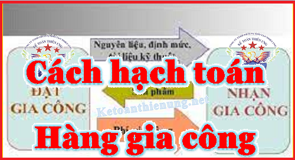

Hướng dẫn cách hạch toán hàng gia công: Cách hạch toán hàng nhận gia công; Cách hạch toán hàng đi gia công theo Thông tư 200 và 133; Hạch toán doanh thu hàng gia công.
Nhiều bạn kế toán đặt câu hỏi: Xuất hàng gửi đi gia công hạch toán như thế nào? Nhận hàng gia công hạch toán như thế nào? Kế toán Diệu Tâm xin hướng dẫn cách hạch toán hàng gửi đi gia công – nhận gia công chi tiết theo Thông tư 200 và 133 hiện hành.
---------------------------------------------------------------
1. Xuất hàng đi gia công có phải xuất hóa đơn?
Căn cứ theo Khoản 3 Điều 13 Nghị định 123/2020/NĐ-CP quy định:
"3. Quy định về áp dụng hóa đơn điện tử, phiếu xuất kho kiêm vận chuyển nội bộ, phiếu xuất kho hàng gửi bán đại lý đối với một số trường hợp cụ thể theo yêu cầu quản lý như sau:
c) Cơ sở kinh doanh kê khai, nộp thuế giá trị gia tăng theo phương pháp khấu trừ có hàng hóa, dịch vụ xuất khẩu (kể cả cơ sở gia công hàng hóa xuất khẩu) khi xuất khẩu hàng hóa, dịch vụ sử dụng hóa đơn giá trị gia tăng điện tử.
- Khi xuất hàng hóa để vận chuyển đến cửa khẩu hay đến nơi làm thủ tục xuất khẩu, cơ sở sử dụng Phiếu xuất kho kiêm vận chuyển nội bộ theo quy định làm chứng từ lưu thông hàng hóa trên thị trường. Sau khi làm xong thủ tục cho hàng hóa xuất khẩu, cơ sở lập hóa đơn giá trị gia tăng cho hàng hóa xuất khẩu."
Theo khoản 4 và 6 Điều 5 Thông tư liên tịch 64/2015/TTLT-BTC-BCT-BCA-BQP ngày 08/05/2015 quy định:
"5. Trường hợp cơ sở sản xuất, gia công hàng xuất khẩu vận chuyển bán thành phẩm, nguyên, nhiên, vật liệu để gia công lại tại cơ sở gia công khác thì phải có Hợp đồng gia công lại kèm theo Phiếu xuất kho kiêm vận chuyển nội bộ và Lệnh điều động."
Theo Điều 4 Thông tư 219 quy định: Đối tượng không chịu thuế GTGT:
"20. Hàng hóa chuyển khẩu, quá cảnh qua lãnh thổ Việt Nam; hàng tạm nhập khẩu, tái xuất khẩu; hàng tạm xuất khẩu, tái nhập khẩu; nguyên liệu, vật tư nhập khẩu để sản xuất, gia công hàng hóa xuất khẩu theo hợp đồng sản xuất, gia công xuất khẩu ký kết với bên nước ngoài."
Theo Điều 9 Thông tư 219 Quy định: Thuế suất 0%:
"+ Hàng hóa gia công chuyển tiếp theo quy định của pháp luật thương mại về hoạt động mua, bán hàng hóa quốc tế và các hoạt động đại lý mua, bán, gia công hàng hóa với nước ngoài."
Theo Điều 7 Thông tư 219: Quy định Giá tính thuế GTGT:
"8. Đối với gia công hàng hóa là giá gia công theo hợp đồng gia công chưa có thuế GTGT, bao gồm cả tiền công, chi phí về nhiên liệu, động lực, vật liệu phụ và chi phí khác phục vụ cho việc gia công hàng hóa."
Như vậy:
- Bên gửi hàng đi gia công (vận chuyển bán thành phẩm, nguyên, nhiên, vật liệu): Khi xuất hàng gửi đi gia công DN chỉ cần lập Phiếu xuất kho kiêm vận chuyển nội bộ và Lệnh điều động.
+) Nếu là gia công hàng hóa xuất khẩu thì khi vận chuyển đến cửa khẩu hay đến nơi làm thủ tục xuất khẩu -> Thì lập Phiếu xuất kho kiêm vận chuyển nội bộ -> Sau khi làm xong thủ tục cho hàng xuất khẩu -> thì lập hóa đơn.
- Bên nhận gia công: Khi xuất hàng gia công trả lại thì lập Phiếu xuất kho và Chỉ xuất hóa đơn GTGT (hoặc hóa đơn bán hàng) đối với doanh thu hàng gia công và tiền Nguyên vật liệu, phụ liệu ...(Nếu bên nhận gia công cung cấp NVL, phụ liệu ...).
-----------------------------------------------------------------------------------
a. Cách hạch toán hàng xuất đi gia công (Bên thuê gia công):
- Khi xuất kho giao hàng để gia công:
Nợ TK 154 - Chi phí sản xuất, kinh doanh dở dang
Có các TK 152, 153, 156.
- Ghi nhận chi phí gia công hàng hoá và thuế GTGT được khấu trừ:
Nợ TK 154 - Chi phí sản xuất, kinh doanh dở dang
Nợ TK 133 - Thuế GTGT được khấu trừ (nếu có)
Có các TK 111, 112, 331,...
- Khi nhận lại hàng gửi gia công chế biến hoàn thành nhập kho, ghi:
Nợ các TK 152, 153, 156
Có TK 154 - Chi phí sản xuất, kinh doanh dở dang.
b. Cách hạch toán hàng nhận gia công (Bên nhận gia công):
- Khi nhận hàng để gia công:
DN chủ động theo dõi và ghi chép thông tin về toàn bộ giá trị vật tư, hàng hoá nhận gia công trong phần thuyết minh BCTC. (Tức là không hạch toán vào sổ sách kế toán của DN)
- Khi xác định doanh thu từ số tiền gia công thực tế được hưởng, ghi:
Nợ các TK 111, 112, 131, ...
Có TK 511- Doanh thu bán hàng và cung cấp dịch vụ
Có TK 3331 - Thuế GTGT phải nộp (33311).
---------------------------------------------------------------------------------------
Kế toán Diệu Tâm xin chúc các bạn thành công!
Kế toán Diệu Tâm thường xuyên tổ chức các lớp học thực hành kế toán tổng hợp thực tế, dạy trên chứng từ thực tế và các phần mềm, cam kết dạy tới khi nào làm được việc mới thôi.
----------------------------------------------------------------
